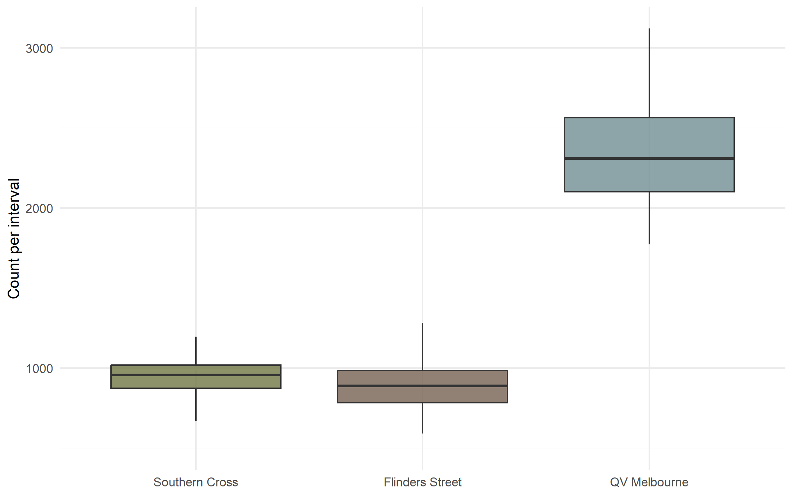
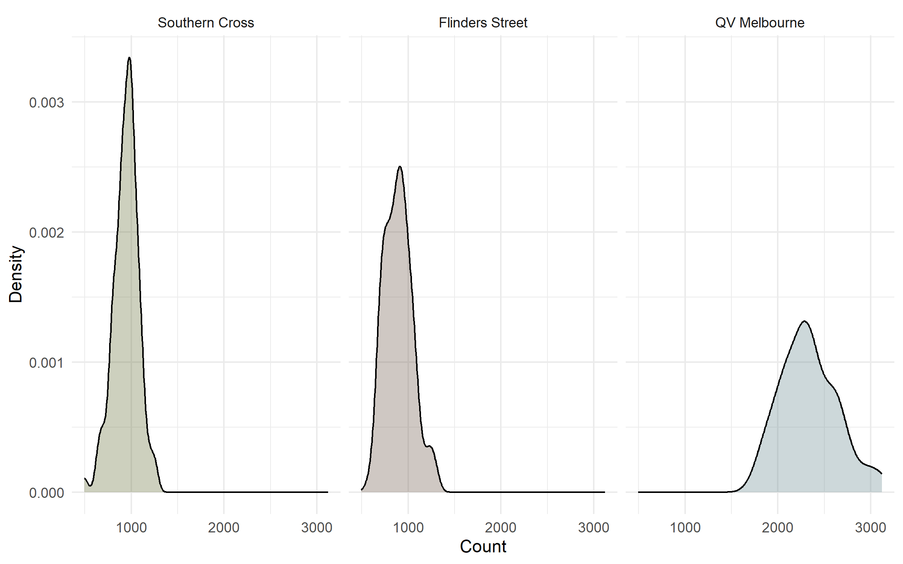
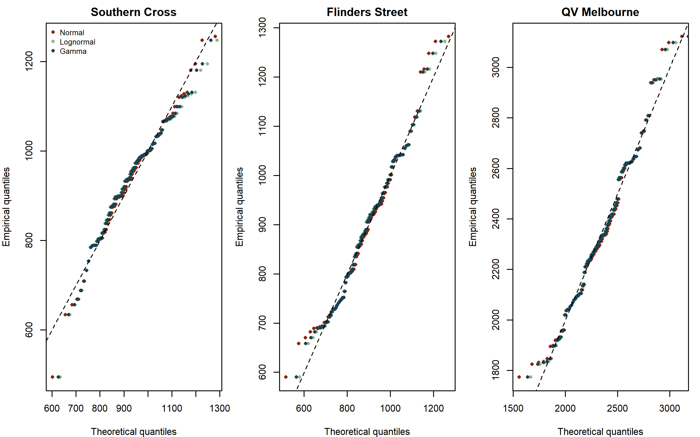
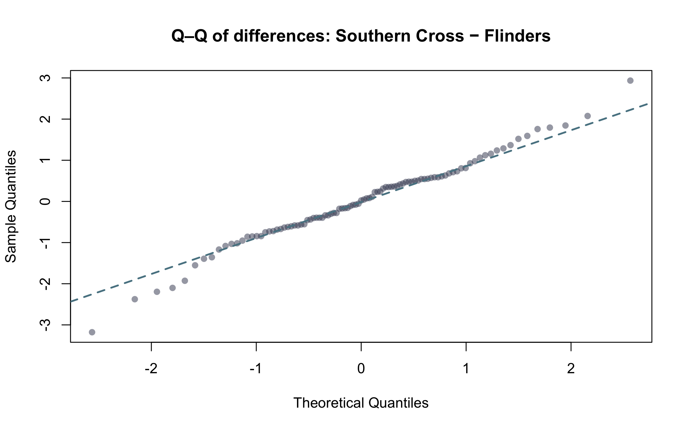
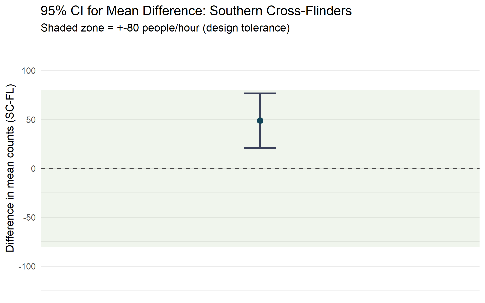
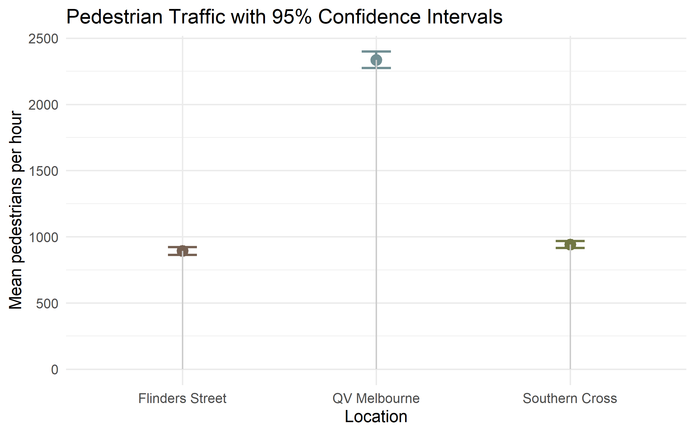
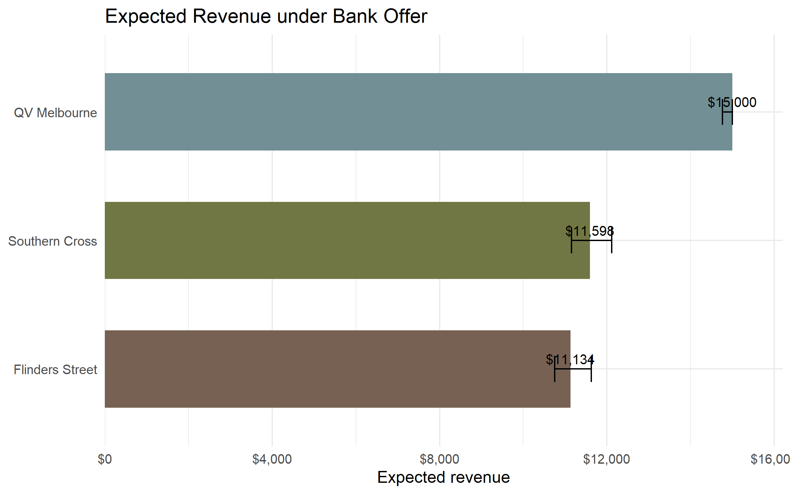

pedestrian_df <- read.csv(here::here("data/pedestrians.csv"))Pedestrian Crossings Data Analysis Report (ETC5242 Assignment 2)
Task 1 - Distribution and Models
Purpose and approach
The aim was to describe how lunchtime pedestrian counts vary at the three crossings (Flinders Street, Southern Cross, QV Melbourne) and to fit probability models that summarise these patterns for design and planning. We began with exploratory graphics; histograms, densities and boxplots (Figure 1 and Figure 2) and computed descriptive statistics for each site (mean, median, standard deviation, minimum–maximum and variance Table 1). These summaries show that QV Melbourne has the largest flows and greater day-to-day variation, while Flinders Street and Southern Cross have lower, tighter distributions.
pedestrian_long <- pedestrian_df %>%
mutate(obs = row_number()) %>%
pivot_longer(-obs, names_to = "crossing", values_to = "count") %>%
mutate(crossing = recode(
crossing,
"flinders_street" = "Flinders Street",
"qv_melbourne" = "QV Melbourne",
"southern_cross" = "Southern Cross")) %>%
mutate(crossing = factor(
crossing,
levels = c("Southern Cross", "Flinders Street", "QV Melbourne")))ggplot(pedestrian_long, aes(x = crossing, y = count, fill = crossing)) +
geom_boxplot(outlier.shape = NA, alpha = 0.8) +
scale_fill_manual(values = cross_cols) +
labs(
x = NULL,
y = "Count per interval"
) +
theme_minimal() +
theme(legend.position = "none")

ggplot(pedestrian_long, aes(x = count, fill = crossing)) +
geom_density(alpha = 0.35) +
facet_wrap(~ crossing, scales = "fixed") +
scale_fill_manual(values = cross_cols) +
labs(
x = "Count",
y = "Density"
) +
theme_minimal() +
theme(legend.position = "none")

As shown in Figure 1 and Figure 2, pedestrian activity differs clearly across the three crossings. The boxplots indicate that QV Melbourne consistently records the highest pedestrian counts, with a median around 2.3 to 2.5 thousand per interval and the widest spread, showing both heavy usage and large fluctuations. Southern Cross and Flinders Street have lower medians (roughly 900 to 1,000 and 800 to 900 respectively) and narrower boxes, suggesting steadier, lighter flows.
The density curves in Figure 2 confirm that all three distributions are unimodal and right-skewed, reflecting occasional high-traffic bursts. QV Melbourne’s distribution sits furthest to the right, while Southern Cross and Flinders overlap slightly, with Flinders trending marginally lower.
Overall, Figure 1 and Figure 2 highlight that QV Melbourne is the busiest and most variable crossing. We would prioritise it for infrastructure or timing upgrades, while Southern Cross and Flinders Street appear relatively stable and would need only minor adjustments.
pedestrian_long %>%
group_by(crossing) %>%
summarise(
n = n(),
mean = mean(count),
median= median(count),
sd = sd(count),
min = min(count),
max = max(count),
iqr = IQR(count),
.groups = "drop"
) %>%
kable(
digits = 1, align = c("l","r")) %>%
kable_styling(
bootstrap_options = c("striped", "hover", "condensed", "responsive"),
full_width = FALSE
) %>%
row_spec(0, bold = TRUE, color = "#FFFFFF", background = "#598392") %>%
column_spec(1, bold = TRUE, color = "#004D40")| crossing | n | mean | median | sd | min | max | iqr |
|---|---|---|---|---|---|---|---|
| Southern Cross | 97 | 941.8 | 955 | 133.0 | 494 | 1256 | 143 |
| Flinders Street | 97 | 893.0 | 887 | 147.9 | 590 | 1282 | 202 |
| QV Melbourne | 97 | 2336.7 | 2310 | 304.9 | 1773 | 3122 | 462 |
The summary Table 1 provides summary statistics for pedestrian counts at each crossing (n ~ 97 per site). The results align with the distributional patterns shown in Figures (Figure 1 and Figure 2).
QV Melbourne. The mean of 2,336.7 and median of 2,310 indicate the highest sustained demand. Dispersion is largest in absolute terms (sd ~ 305, IQR 462, range 1,773–3,122), confirming substantial variability and frequent high-traffic intervals.
Southern Cross. The mean of 941.8 and median of 955 reflect a steady, moderate flow with relatively tight spread (sd ~ 133, IQR 143, range 494–1,256), indicating stable conditions and fewer extreme peaks.
Flinders Street. The mean of 893.0 and median of 887 show slightly lighter traffic than Southern Cross. Variability is somewhat higher through the middle of the distribution (sd ~ 148, IQR 202, range 590–1,282), suggesting greater fluctuation around a lower centre.
Across all sites, the mean exceeds the median, consistent with the right-skew observed in Figures Figure 1 and Figure 2, which reflects occasional upper-tail surges.
Implications for design and operations.
Prioritise QV Melbourne for capacity and signal-timing upgrades and plan to accommodate upper-percentile traffic volumes rather than just the mean.
Southern Cross appears operationally stable, so lighter, targeted interventions are likely sufficient.
Flinders Street shows greater variability around a lower centre, so monitoring for intermittent congestion is recommended.
Model fitting and resulting estimates
# Southern Cross
sc <- pedestrian_df$southern_cross
fit_sc_norm <- fitdistr(sc, "normal")
fit_sc_logn <- fitdistr(sc, "lognormal")
fit_sc_gamma <- fitdistr(sc, "gamma")
sc_models <- tibble(
crossing = "Southern Cross",
model = c("normal","lognormal","gamma"),
logLik = c(logLik(fit_sc_norm)[1], logLik(fit_sc_logn)[1], logLik(fit_sc_gamma)[1]),
AIC = c(AIC(fit_sc_norm), AIC(fit_sc_logn), AIC(fit_sc_gamma)),
mean_est = c(
unname(fit_sc_norm$estimate["mean"]),
exp(fit_sc_logn$estimate["meanlog"] + 0.5*fit_sc_logn$estimate["sdlog"]^2),
unname(fit_sc_gamma$estimate["shape"] / fit_sc_gamma$estimate["rate"])),
sd_est = c(
unname(fit_sc_norm$estimate["sd"]),
sqrt((exp(fit_sc_logn$estimate["sdlog"]^2) - 1) *
exp(2*fit_sc_logn$estimate["meanlog"] + fit_sc_logn$estimate["sdlog"]^2)),
sqrt(unname(fit_sc_gamma$estimate["shape"]) / (unname(fit_sc_gamma$estimate["rate"])^2))))
# Flinders Street
fl <- pedestrian_df$flinders_street
fit_fl_norm <- fitdistr(fl, "normal")
fit_fl_logn <- fitdistr(fl, "lognormal")
fit_fl_gamma <- fitdistr(fl, "gamma")
fl_models <- tibble(
crossing = "Flinders Street",
model = c("normal","lognormal","gamma"),
logLik = c(logLik(fit_fl_norm)[1], logLik(fit_fl_logn)[1], logLik(fit_fl_gamma)[1]),
AIC = c(AIC(fit_fl_norm), AIC(fit_fl_logn), AIC(fit_fl_gamma)),
mean_est = c(
unname(fit_fl_norm$estimate["mean"]),
exp(fit_fl_logn$estimate["meanlog"] + 0.5*fit_fl_logn$estimate["sdlog"]^2),
unname(fit_fl_gamma$estimate["shape"] / fit_fl_gamma$estimate["rate"])),
sd_est = c(
unname(fit_fl_norm$estimate["sd"]),
sqrt((exp(fit_fl_logn$estimate["sdlog"]^2) - 1) *
exp(2*fit_fl_logn$estimate["meanlog"] + fit_fl_logn$estimate["sdlog"]^2)),
sqrt(unname(fit_fl_gamma$estimate["shape"]) / (unname(fit_fl_gamma$estimate["rate"])^2))))
# QV Melbourne
qv <- pedestrian_df$qv_melbourne
fit_qv_norm <- fitdistr(qv, "normal")
fit_qv_logn <- fitdistr(qv, "lognormal")
fit_qv_gamma <- fitdistr(qv, "gamma")
qv_models <- tibble(
crossing = "QV Melbourne",
model = c("normal","lognormal","gamma"),
logLik = c(logLik(fit_qv_norm)[1], logLik(fit_qv_logn)[1], logLik(fit_qv_gamma)[1]),
AIC = c(AIC(fit_qv_norm), AIC(fit_qv_logn), AIC(fit_qv_gamma)),
mean_est = c(
unname(fit_qv_norm$estimate["mean"]),
exp(fit_qv_logn$estimate["meanlog"] + 0.5*fit_qv_logn$estimate["sdlog"]^2),
unname(fit_qv_gamma$estimate["shape"] / fit_qv_gamma$estimate["rate"])),
sd_est = c(
unname(fit_qv_norm$estimate["sd"]),
sqrt((exp(fit_qv_logn$estimate["sdlog"]^2) - 1) *
exp(2*fit_qv_logn$estimate["meanlog"] + fit_qv_logn$estimate["sdlog"]^2)),
sqrt(unname(fit_qv_gamma$estimate["shape"]) / (unname(fit_qv_gamma$estimate["rate"])^2))))
mle_fits <- bind_rows(sc_models, fl_models, qv_models) %>%
arrange(crossing, AIC)
mle_fits %>%
kable(
caption = "Maximum-likelihood estimates for Normal, Lognormal and Gamma models across the three crossings.",
digits = 1,
align = rep("c")
) %>%
kable_styling(
bootstrap_options = c("striped", "hover", "condensed", "responsive"),
full_width = FALSE,
position = "center"
) %>%
row_spec(0, bold = TRUE, color = "#FFFFFF", background = "#598392") %>%
column_spec(1, bold = TRUE, color = "#004D40")| crossing | model | logLik | AIC | mean_est | sd_est |
|---|---|---|---|---|---|
| Flinders Street | lognormal | -619.6 | 1243.3 | 893.0 | 146.8 |
| Flinders Street | gamma | -620.0 | 1244.0 | 893.0 | 145.7 |
| Flinders Street | normal | -621.8 | 1247.6 | 893.0 | 147.1 |
| QV Melbourne | lognormal | -690.0 | 1384.1 | 2336.6 | 301.0 |
| QV Melbourne | gamma | -690.5 | 1384.9 | 2336.7 | 300.3 |
| QV Melbourne | normal | -692.0 | 1387.9 | 2336.7 | 303.3 |
| Southern Cross | normal | -611.5 | 1227.0 | 941.8 | 132.3 |
| Southern Cross | gamma | -614.7 | 1233.4 | 941.8 | 137.7 |
| Southern Cross | lognormal | -617.0 | 1238.0 | 942.3 | 142.4 |
Guided by the shapes in the graphics and the Q–Q diagnostics (Figure 3), we fitted simple parametric models using maximum likelihood estimation. Southern Cross was approximately symmetric on the original scale, so a Normal model was selected. Flinders Street and QV Melbourne displayed mild right-skew and near-normality on the log scale, so Lognormal models were used. The resulting parameter estimates (estimate ± SE) were:
Flinders Street (Lognormal): meanlog = 6.7813 (0.0166), sdlog = 0.1633 (0.0117)
Southern Cross (Normal): mean = 941.78 (13.44), sd = 132.34 (9.50)
QV Melbourne (Lognormal): meanlog = 7.7482 (0.0130), sdlog = 0.1283 (0.0092)
These fitted parameters describe the statistical characteristics of each site’s distribution and provide a foundation for later estimation tasks.
par(mfrow = c(1,3), mar = c(4,4,2,1))
## Southern Cross
x <- sort(sc); n <- length(x); p <- (seq_len(n) - 0.5) / n
qN <- qnorm(p, mean = fit_sc_norm$estimate["mean"], sd = fit_sc_norm$estimate["sd"])
qL <- qlnorm(p, meanlog = fit_sc_logn$estimate["meanlog"], sdlog = fit_sc_logn$estimate["sdlog"])
qG <- qgamma(p, shape = fit_sc_gamma$estimate["shape"], rate = fit_sc_gamma$estimate["rate"])
plot(qN, x, xlab = "Theoretical quantiles", ylab = "Empirical quantiles",
main = "Southern Cross", pch = 16, col = "#8F250C", cex = 0.8)
points(qL, x, pch = 16, col = "#9cb380", cex = 0.8)
points(qG, x, pch = 16, col = "#124559", cex = 0.8)
abline(0, 1, lty = 2)
legend("topleft", legend = c("Normal", "Lognormal", "Gamma"),
col = c("#8F250C", "#9cb380", "#124559"), pch = 16, bty = "n", cex = 0.8)
# Flinders Street
x <- sort(fl); n <- length(x); p <- (seq_len(n) - 0.5) / n
qN <- qnorm(p, mean = fit_fl_norm$estimate["mean"], sd = fit_fl_norm$estimate["sd"])
qL <- qlnorm(p, meanlog = fit_fl_logn$estimate["meanlog"], sdlog = fit_fl_logn$estimate["sdlog"])
qG <- qgamma(p, shape = fit_fl_gamma$estimate["shape"], rate = fit_fl_gamma$estimate["rate"])
plot(qN, x, xlab = "Theoretical quantiles", ylab = "Empirical quantiles",
main = "Flinders Street", pch = 16, col = "#8F250C", cex = 0.8)
points(qL, x, pch = 16, col = "#9cb380", cex = 0.8)
points(qG, x, pch = 16, col = "#124559", cex = 0.8)
abline(0, 1, lty = 2)
# QV Melbourne
x <- sort(qv); n <- length(x); p <- (seq_len(n) - 0.5) / n
qN <- qnorm(p, mean = fit_qv_norm$estimate["mean"], sd = fit_qv_norm$estimate["sd"])
qL <- qlnorm(p, meanlog = fit_qv_logn$estimate["meanlog"], sdlog = fit_qv_logn$estimate["sdlog"])
qG <- qgamma(p, shape = fit_qv_gamma$estimate["shape"], rate = fit_qv_gamma$estimate["rate"])
plot(qN, x, xlab = "Theoretical quantiles", ylab = "Empirical quantiles",
main = "QV Melbourne", pch = 16, col = "#8F250C", cex = 0.8)
points(qL, x, pch = 16, col = "#9cb380", cex = 0.8)
points(qG, x, pch = 16, col = "#124559", cex = 0.8)
abline(0, 1, lty = 2)

Adequacy checks and assumptions
Adequacy was assessed using Q–Q plots (Figure 3). For Southern Cross, the points lie close to the 45-degree line under a Normal reference, indicating a good fit. For Flinders Street and QV Melbourne, the log-transformed counts align well with a Normal reference, supporting the Lognormal model on the original count scale. Small deviations appear only in the upper tail. We also considered alternative count models such as Poisson and Negative Binomial. The Poisson model was unsuitable because of over-dispersion, and although a Negative Binomial model could handle this, the large counts make continuous models like the Normal and Lognormal more appropriate and visually accurate. We assume that observations are independent across days within each site and that the fitted distribution family provides a reasonable approximation of lunchtime pedestrian variability.
Task 2 - 90th Percentile Flow
Purpose
The purpose of this task was to estimate the 90th percentile pedestrian flow for each crossing to check whether they meet the regulation that crossings should operate with smooth pedestrian flow 90 percent of the time. This means that on 90 percent of the days, the pedestrian count should be below a certain value so that congestion is avoided. The 90th percentile therefore represents the upper limit of typical daily usage and provides an important benchmark for infrastructure design. A crossing that can handle this level of flow without delays can be considered adequately sized.
Approach 1: Sample Quantile
In the first approach, the 90th percentile was calculated directly from the observed data using the quantile() function. To account for sampling uncertainty, 95 percent bootstrap confidence intervals were constructed using 1000 resamples. The bootstrap method was chosen because it does not assume any particular distributional form and is appropriate for moderately sized datasets.
pedestrian_long %>%
group_by(crossing) %>%
summarise(q90 = quantile(count, 0.9)) %>%
kable(caption = "Empirical 90th percentile estimates and 95% bootstrap confidence intervals for each crossing",
digits = 1, align = c("l","r")) %>%
kable_styling(
bootstrap_options = c("striped", "hover", "condensed", "responsive"),
full_width = FALSE
) %>%
row_spec(0, bold = TRUE, color = "#FFFFFF", background = "#598392") %>%
column_spec(1, bold = TRUE, color = "#004D40")
# function to calculate 90th percentile
q90_fn <- function(data, i) quantile(data[i], 0.9)
# Flinders Street
fl_boot <- boot(pedestrian_df$flinders_street, q90_fn, R = 1000)
ci_fl <- boot.ci(fl_boot, type = "perc")
# Southern Cross
sc_boot <- boot(pedestrian_df$southern_cross, q90_fn, R = 1000)
ci_sc <- boot.ci(sc_boot, type = "perc")
# QV Melbourne
qv_boot <- boot(pedestrian_df$qv_melbourne, q90_fn, R = 1000)
ci_qv <- boot.ci(qv_boot, type = "perc")
sample_tbl <- tibble(
crossing = c("Flinders Street","Southern Cross","QV Melbourne"),
q90_sample = round(c(
quantile(pedestrian_df$flinders_street, 0.9),
quantile(pedestrian_df$southern_cross, 0.9),
quantile(pedestrian_df$qv_melbourne, 0.9)
), 2),
q90_sample_low = round(c(ci_fl$percent[4], ci_sc$percent[4], ci_qv$percent[4]), 2),
q90_sample_high = round(c(ci_fl$percent[5], ci_sc$percent[5], ci_qv$percent[5]), 2)
)| crossing | q90 |
|---|---|
| Southern Cross | 1090.0 |
| Flinders Street | 1060.8 |
| QV Melbourne | 2704.0 |
The estimates are summarised in Table 3, which shows that the busiest 10 percent of days exceed approximately 1000 pedestrians per hour for the two station crossings and around 2700 for QV Melbourne.
Approach 2: Model-Based Estimation
In the second approach, the fitted probability models from Task 1 were used to estimate theoretical 90th percentiles. A Normal model was selected for Southern Cross (symmetric data) and Lognormal models for Flinders Street and QV Melbourne (right-skewed). The resulting estimates and 95 percent CIs are presented. The model-based 90th percentiles were consistent with the empirical estimates, confirming that the chosen models adequately represent the tail behaviour.
# Compute the theoretical 90th percentile from each fitted model
q90_model_point <- list(
fl = qlnorm(0.9, meanlog = fit_fl_logn$estimate["meanlog"], sdlog = fit_fl_logn$estimate["sdlog"]),
sc = qnorm (0.9, mean = fit_sc_norm$estimate["mean"], sd = fit_sc_norm$estimate["sd"]),
qv = qlnorm(0.9, meanlog = fit_qv_logn$estimate["meanlog"], sdlog = fit_qv_logn$estimate["sdlog"])
)
q90_model_ci <- function(fit, dist, n, B = 1000) {
boot_q90 <- replicate(B, {
sim <- if (dist == "normal") {
rnorm(n, mean = fit$estimate["mean"], sd = fit$estimate["sd"])
} else {
rlnorm(n, meanlog = fit$estimate["meanlog"], sdlog = fit$estimate["sdlog"])
}
quantile(sim, 0.9)
})
quantile(boot_q90, c(0.025, 0.975))
}
n_fl <- nrow(pedestrian_df)
n_sc <- nrow(pedestrian_df)
n_qv <- nrow(pedestrian_df)
ci_fl_m <- q90_model_ci(fit_fl_logn, "lognormal", n_fl)
ci_sc_m <- q90_model_ci(fit_sc_norm, "normal", n_sc)
ci_qv_m <- q90_model_ci(fit_qv_logn, "lognormal", n_qv)
model_tbl <- tibble(
crossing = c("Flinders Street","Southern Cross","QV Melbourne"),
model = c("lognormal","normal","lognormal"),
q90_model = round(c(q90_model_point$fl, q90_model_point$sc, q90_model_point$qv), 2),
q90_model_low = round(c(ci_fl_m[1], ci_sc_m[1], ci_qv_m[1]), 2),
q90_model_high = round(c(ci_fl_m[2], ci_sc_m[2], ci_qv_m[2]), 2)
)Discussion and Recommendation
final_tbl <- sample_tbl %>%
left_join(model_tbl, by = "crossing")
final_tbl %>%
kable(
caption = "Comparison of empirical and model-based 90th percentile estimates with 95% confidence intervals for each crossing",
digits = 1,
align = rep("c", ncol(final_tbl))
) %>%
kable_styling(
bootstrap_options = c("striped", "hover", "condensed", "responsive"),
full_width = FALSE,
position = "center"
) %>%
row_spec(0, bold = TRUE, color = "#FFFFFF", background = "#598392") %>%
column_spec(1, bold = TRUE, color = "#004D40")| crossing | q90_sample | q90_sample_low | q90_sample_high | model | q90_model | q90_model_low | q90_model_high |
|---|---|---|---|---|---|---|---|
| Flinders Street | 1060.8 | 1038.6 | 1157.1 | lognormal | 1086.3 | 1030.6 | 1142.2 |
| Southern Cross | 1090.0 | 1057.2 | 1128.0 | normal | 1111.4 | 1066.2 | 1150.2 |
| QV Melbourne | 2704.0 | 2624.0 | 2939.0 | lognormal | 2731.7 | 2614.4 | 2836.3 |
Both the sample-based and model-based approaches produced very similar estimates of the 90th percentile, confirming that the fitted models are suitable for these datasets. As shown in Table 4, the two methods provide nearly identical results, indicating strong agreement between empirical and theoretical approaches. However, the model-based method is more reliable for planning because it provides smoother estimates of upper-tail behaviour and is less affected by daily sampling variability. The results suggest that all three crossings have sufficient capacity to maintain smooth pedestrian flow for at least 90 percent of the time. Among the locations, QV Melbourne consistently recorded the highest pedestrian volume, followed by Southern Cross and Flinders Street, indicating higher commercial potential and greater design demand at QV Melbourne.
Task 3 – Engineering Design Comparison
The purpose of this analysis was to determine whether the Flinders Street and Southern Cross crossings can use the same design and materials. The engineers specified that the average difference in hourly pedestrian flow between the two locations should not exceed 80 people per hour for the design to be considered interchangeable.
To test this, a paired t-test was used to compare hourly pedestrian counts recorded simultaneously at both sites. This method was chosen because it accounts for shared conditions such as time of day and weather, which could affect pedestrian flow. A 95 percent confidence interval for the mean difference in pedestrian counts between Southern Cross and Flinders Street was calculated.
The assumption of approximate normality required for the paired t-test was checked using a Q–Q plot of the differences (Figure 4). The points on the plot closely followed a straight line, confirming that the distribution of differences was approximately normal. Given the relatively large sample size of 97 paired observations, the Central Limit Theorem ensures that the sampling distribution of the mean difference is approximately normal even if the underlying data are not perfectly so. Therefore, it is valid to use the CLT in this context, and the paired t-test provides a reliable confidence interval.
df <- na.omit(pedestrian_df[, c("southern_cross","flinders_street")])
sc <- df$southern_cross
fl <- df$flinders_street
d <- sc - fl
tt <- t.test(sc, fl, paired = TRUE, conf.level = 0.95)
paired_tt_tbl <- tibble(
Comparison = "Southern Cross − Flinders Street",
Mean_Diff = tt$estimate,
`95% CI (Low)` = tt$conf.int[1],
`95% CI (High)` = tt$conf.int[2],
t_value = tt$statistic,
df = tt$parameter,
p_value = tt$p.value
)
paired_tt_tbl %>%
kable(
caption = "Paired t-test results comparing Southern Cross and Flinders Street (95% confidence interval for mean difference).",
digits = 2,
align = rep("c", ncol(.))
) %>%
kable_styling(
bootstrap_options = c("striped", "hover", "condensed", "responsive"),
full_width = FALSE,
position = "center"
) %>%
row_spec(0, bold = TRUE, color = "#FFFFFF", background = "#598392") %>%
column_spec(1, bold = TRUE, color = "#004D40")| Comparison | Mean_Diff | 95% CI (Low) | 95% CI (High) | t_value | df | p_value |
|---|---|---|---|---|---|---|
| Southern Cross − Flinders Street | 48.75 | 20.86 | 76.64 | 3.47 | 96 | 0 |
qqnorm(scale(d),
main = "Q–Q of differences: Southern Cross − Flinders",
pch = 16,
col = adjustcolor("#3a405a", alpha.f = 0.5))
qqline(scale(d),
col = "#598392",
lwd = 2,
lty = 2)

As shown in Table 5, Southern Cross had, on average, about 49 more pedestrians per hour than Flinders Street, with a 95 percent confidence interval ranging from approximately 21 to 77 people per hour. This range lies entirely within the +-80 threshold defined by the engineering team. The Q–Q plot in Figure 4 confirmed that the paired differences were approximately normally distributed, supporting the reliability of this result.
ci <- tibble(
estimate = tt$estimate,
lower = tt$conf.int[1],
upper = tt$conf.int[2]
)
ggplot(ci) +
geom_rect(aes(xmin = -Inf, xmax = Inf, ymin = -80, ymax = 80),
fill = "#b5cda3", alpha = 0.2) +
geom_errorbar(aes(x = 1, ymin = lower, ymax = upper),
width = 0.08, linewidth = 1,
colour = "#3a405a") +
geom_point(aes(x = 1, y = estimate),
size = 3, colour = "#124559") +
geom_hline(yintercept = 0, linetype = "dashed", colour = "#444444") +
coord_cartesian(ylim = c(-120, 120)) +
scale_x_continuous(limits = c(0.5, 1.5), breaks = NULL) +
labs(
title = "95% CI for Mean Difference: Southern Cross-Flinders",
subtitle = "Shaded zone = +-80 people/hour (design tolerance)",
y = "Difference in mean counts (SC-FL)",
x = NULL
) +
theme_minimal(base_size = 13)

Based on these results, we can be 95 percent confident that the true mean difference in pedestrian counts between the two crossings is less than 80 people per hour. This indicates that although Southern Cross tends to be slightly busier, the difference is not large enough to justify separate designs. Therefore, the engineers can confidently use the same design and materials for both crossings, achieving cost savings without compromising performance or pedestrian safety. The analysis is statistically sound and provides a clear, evidence-based recommendation for the engineering team.
Task 4 - Marketing Value Comparison
The purpose of this task was to estimate and compare the average hourly pedestrian counts at three major Melbourne crossings: Southern Cross, Flinders Street, and QV Melbourne. The aim was to help the marketing team evaluate which locations offer the highest advertising value for billboard placements. Pedestrian flow directly represents potential audience exposure, so understanding the mean number of people passing through each site is crucial for assessing advertising reach. Constructing 95 percent confidence intervals around these means provides insight into both the central tendency and the uncertainty of the estimates. This information allows the marketing team to make data-driven decisions about which sites are most likely to deliver the best visibility and return on investment for advertising campaigns.
# Southern Cross
tt_sc <- t.test(pedestrian_df$southern_cross, conf.level = 0.95)
# Flinders Street
tt_fl <- t.test(pedestrian_df$flinders_street, conf.level = 0.95)
# QV
tt_qv <- t.test(pedestrian_df$qv, conf.level = 0.95)tt_table <- tibble(
Location = c("Southern Cross", "Flinders Street", "QV Melbourne"),
Mean = c(tt_sc$estimate, tt_fl$estimate, tt_qv$estimate),
`95% CI (Low)` = c(tt_sc$conf.int[1], tt_fl$conf.int[1], tt_qv$conf.int[1]),
`95% CI (High)` = c(tt_sc$conf.int[2], tt_fl$conf.int[2], tt_qv$conf.int[2]))
tt_table %>%
kable(
caption = "Mean pedestrian counts and 95% confidence intervals for each crossing (one-sample t-tests)",
digits = 1,
align = rep("c", ncol(.))
) %>%
kable_styling(
bootstrap_options = c("striped", "hover", "condensed", "responsive"),
full_width = FALSE,
position = "center"
) %>%
row_spec(0, bold = TRUE, color = "#FFFFFF", background = "#598392") %>%
column_spec(1, bold = TRUE, color = "#004D40")| Location | Mean | 95% CI (Low) | 95% CI (High) |
|---|---|---|---|
| Southern Cross | 941.8 | 915.0 | 968.6 |
| Flinders Street | 893.0 | 863.2 | 922.8 |
| QV Melbourne | 2336.7 | 2275.3 | 2398.2 |
As shown in Table 6, QV Melbourne has a much higher mean pedestrian count than the other two crossings, while Southern Cross and Flinders Street have similar average flows.
ggplot(tt_table, aes(x = Location, y = Mean, color = Location)) +
geom_point(size = 4) +
geom_errorbar(aes(ymin = `95% CI (Low)`, ymax = `95% CI (High)`), width = 0.15, linewidth = 1) +
geom_segment(aes(xend = Location, y = 0, yend = Mean), color = "grey80") +
scale_color_manual(values = cross_cols) +
labs(
title = "Pedestrian Traffic with 95% Confidence Intervals",
y = "Mean pedestrians per hour",
x = "Location"
) +
theme_minimal(base_size = 14) +
theme(legend.position = "none")

The lollipop plot in Figure 6 visually compares the mean pedestrian flows across the three crossings. Each dot represents the estimated mean and the error bars display the 95 percent confidence intervals. Southern Cross and Flinders Street show overlapping intervals, indicating statistically similar traffic levels, while QV Melbourne’s interval sits far higher, reflecting consistently greater pedestrian flow and higher variability.
QV Melbourne recorded the highest average pedestrian flow of about 2300 people per hour approximately twice that of Southern Cross and Flinders Street. This indicates that QV Melbourne offers the strongest advertising potential and the highest expected exposure for billboard campaigns. Southern Cross and Flinders Street both have mean flows below 1000 people per hour and therefore represent moderate advertising opportunities.
The confidence intervals were computed using one-sample t-tests, which are appropriate when the population standard deviation is unknown. With 97 observations at each site, the Central Limit Theorem justifies using the t-distribution even for slightly skewed data. The narrower intervals at the two station crossings suggest more stable pedestrian levels, whereas QV Melbourne’s wider interval reflects naturally higher variability accompanying larger volumes.
Task 5 - Billboard Revenue Estimate
The purpose of this task was to estimate the expected billboard revenue that could be earned under the bank’s proposed offer at each of the three pedestrian crossings: Southern Cross, Flinders Street, and QV Melbourne. According to the offer, the bank pays a base amount of $10,000 for each billboard and provides a bonus of $5,000 multiplied by the proportion of days when pedestrian counts exceed 1,000 people per hour. Estimating this proportion and its associated uncertainty allows the marketing and finance teams to forecast expected earnings and identify which sites provide the greatest commercial value. The results quantify how consistent and reliable each location is in attracting high pedestrian traffic and therefore advertising exposure.
The analysis was conducted in two main steps. First, for each crossing, the proportion of days where pedestrian counts exceeded 1,000 people per hour was calculated empirically from the observed data. This proportion represents the probability θ = P(count > 1,000), indicating how frequently the threshold was surpassed.
Second, a 95 percent confidence interval for this probability was computed using the Wilson score interval from the prop.test() function in R. The Wilson method was chosen because it performs well even for small or extreme proportions and includes a continuity correction to improve accuracy when the probability is near 0 or 1.
The expected revenue was then calculated using the formula:
Formula for expected billboard revenue
Revenue = 10,000 + 5,000 × θ
The same transformation was applied to the lower and upper bounds of the confidence intervals for θ to obtain revenue intervals. This approach produced both the average expected revenue and its uncertainty for each location.
THRESH <- 1000
BASE <- 10000
BONUS <- 5000
LEVEL <- 0.95
# Binomial proportion + Wilson CI via prop.test (built-in)
rev_ci <- pedestrian_long %>%
mutate(over_1000 = count > THRESH) %>%
group_by(crossing) %>%
summarise(
n = n(),
k = sum(over_1000),
.groups = "drop"
) %>%
rowwise() %>%
mutate(
pt = list(prop.test(k, n, conf.level = LEVEL, correct = TRUE)),
phat = pt$estimate[[1]],
lo_p = pt$conf.int[1],
hi_p = pt$conf.int[2],
rev_hat = BASE + BONUS * phat,
rev_lo = BASE + BONUS * lo_p,
rev_hi = BASE + BONUS * hi_p
) %>%
ungroup()
rev_ci <- rev_ci[, c("crossing","n", "k", "phat", "lo_p", "hi_p", "rev_hat", "rev_lo", "rev_hi")]
rev_ci %>%
kable(
caption = "Estimated expected revenue and 95% confidence intervals for each crossing using the Wilson score interval.",
digits = 1,
align = rep("c", ncol(final_tbl))
) %>%
kable_styling(
bootstrap_options = c("striped", "hover", "condensed", "responsive"),
full_width = FALSE,
position = "center"
) %>%
row_spec(0, bold = TRUE, color = "#FFFFFF", background = "#598392") %>%
column_spec(1, bold = TRUE, color = "#004D40")| crossing | n | k | phat | lo_p | hi_p | rev_hat | rev_lo | rev_hi |
|---|---|---|---|---|---|---|---|---|
| Southern Cross | 97 | 31 | 0.3 | 0.2 | 0.4 | 11597.9 | 11153.0 | 12115.3 |
| Flinders Street | 97 | 22 | 0.2 | 0.2 | 0.3 | 11134.0 | 10752.5 | 11625.9 |
| QV Melbourne | 97 | 97 | 1.0 | 1.0 | 1.0 | 15000.0 | 14762.6 | 15000.0 |
As shown in Table 7, QV Melbourne consistently exceeded the 1,000 person threshold on every observed day, resulting in the maximum possible revenue under the bank’s structure. Southern Cross and Flinders Street earned lower but similar revenues, reflecting smaller and more variable pedestrian volumes.
Visualisation
A horizontal bar chart with 95 percent confidence intervals (?@fig-task5) was produced to visually compare the expected revenues for the three locations. Each bar represents the average expected revenue, and the error bars display the range of uncertainty based on the Wilson confidence intervals. The plot shows that QV Melbourne achieves the highest and most stable revenue at approximately $15,000, with its interval tightly concentrated at the maximum bonus limit. Southern Cross and Flinders Street appear close together on the chart, indicating similar revenue potential of around $11,000. The relatively narrow intervals for these two sites suggest consistent performance, but their mean revenues are notably below that of QV Melbourne. This visual comparison provides an intuitive summary of which sites are most profitable and how confident we can be in those estimates.
ggplot(rev_ci, aes(x = reorder(crossing, rev_hat), y = rev_hat)) +
geom_col(aes(fill = crossing), width = 0.6) +
geom_errorbar(aes(ymin = rev_lo, ymax = rev_hi), width = 0.2) +
geom_text(aes(label = scales::dollar(rev_hat, accuracy = 1)),
vjust = -0.5, size = 3.5) +
scale_fill_manual(values = cross_cols) +
scale_y_continuous(
labels = scales::label_dollar(prefix = "$", accuracy = 1),
expand = expansion(mult = c(0, 0.08))
) +
coord_flip() +
labs(
title = "Expected Revenue under Bank Offer",
x = NULL, y = "Expected revenue"
) +
theme_minimal(base_size = 12) +
theme(legend.position = "none")

Interpretation
The analysis indicates that QV Melbourne would generate the highest expected revenue, reaching the full amount of $15,000, since it consistently experiences pedestrian flows above the 1,000-person threshold. Southern Cross and Flinders Street would yield similar revenues, both around $11,000, due to their lower proportions of days above the threshold.
These results suggest that QV Melbourne is by far the most attractive location for billboard placement under the bank’s offer, offering both the highest guaranteed visibility and the lowest revenue uncertainty. The two station crossings provide steady but moderate exposure and may still be valuable for lower-cost or secondary advertising campaigns. Overall, the use of the Wilson interval method provides reliable and interpretable confidence bounds that clearly distinguish the three locations in terms of expected financial returns.
References
Angelo Canty and Brian Ripley (2024). boot: Bootstrap R (S-Plus) Functions. R package version 1.3-30.
Davison, A. C. & Hinkley, D. V. (1997) Bootstrap Methods and Their Applications. Cambridge University Press, Cambridge. ISBN 0-521-57391-2
Venables, W. N. & Ripley, B. D. (2002) Modern Applied Statistics with S. Fourth Edition. Springer, New York. ISBN 0-387-95457-0
Wickham H, Averick M, Bryan J, Chang W, McGowan LD, François R, Grolemund G, Hayes A, Henry L, Hester J, Kuhn M, Pedersen TL, Miller E, Bache SM, Müller K, Ooms J, Robinson D, Seidel DP, Spinu V, Takahashi K, Vaughan D, Wilke C, Woo K, Yutani H (2019). “Welcome to the tidyverse.” Journal of Open Source Software, 4(43), 1686. doi:10.21105/joss.01686 https://doi.org/10.21105/joss.01686.
Xie Y (2025). knitr: A General-Purpose Package for Dynamic Report Generation in R. R package version 1.50, https://yihui.org/knitr/.
Yihui Xie (2015) Dynamic Documents with R and knitr. 2nd edition. Chapman and Hall/CRC. ISBN 978-1498716963
Yihui Xie (2014) knitr: A Comprehensive Tool for Reproducible Research in R. In Victoria Stodden, Friedrich Leisch and Roger D. Peng, editors, Implementing Reproducible Computational Research. Chapman and Hall/CRC. ISBN 978-1466561595
Zhu H (2024). kableExtra: Construct Complex Table with ‘kable’ and Pipe Syntax. R package version 1.4.0, https://CRAN.R-project.org/package=kableExtra.
Robinson D, Hayes A, Couch S (2024). broom: Convert Statistical Objects into Tidy Tibbles. R package version 1.0.6, https://CRAN.R-project.org/package=broom.
Wickham H, Henry L (2025). purrr: Functional Programming Tools. R package version 1.0.4, https://CRAN.R-project.org/package=purrr.
Wickham H, Pedersen T, Seidel D (2023). scales: Scale Functions for Visualization. R package version 1.3.0, https://CRAN.R-project.org/package=scales.
Master Maximum Likelihood Estimation in R: A Step-by-Step Guide. (2018, July 16). Analytics Vidhya. https://www.analyticsvidhya.com/blog/2018/07/introductory-guide-maximum-likelihood-estimation-case-study-r/
Bevans, R. (2020, March 26). Akaike Information Criterion | When & How to Use It (Example). Scribbr. https://www.scribbr.com/statistics/akaike-information-criterion/
How to Perform Bootstrapping in R | R-bloggers. (2022, December 17). https://www.r-bloggers.com/2022/12/how-to-perform-bootstrapping-in-r/
boot.ci function—RDocumentation., from https://www.rdocumentation.org/packages/boot/versions/1.3-32/topics/boot.ci?utm_source=chatgpt.com